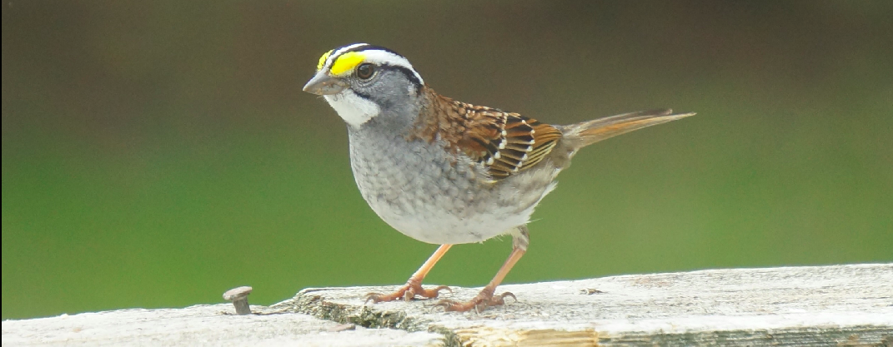

Hi! I'm Matthew Preisendorfer, an OSINT and UAS Technologies Specialist.
My Experience
With over 8 years of experience in software engineering, specializing in Open Source Intelligence (OSINT) and Unmanned Aerial Systems (UAS), I’m passionate about creating efficient and effective solutions that push the boundaries of technology. My expertise spans Python, AI/ML integration, and building robust analytical tools for complex problems.
Technical Skills
About Me
I have been working as a software engineer for over 8 years, where I specialize primarily in Python development. My position at AX ENTERPRIZE focused on the advancement and development of Unmanned Ariel Systems (UAS) technologies, notably supporting contracts from NASA, AFRL, and more. My most recent position at Federal Data Systems (now Clear Fracture) focused on my skills in Open-Source Intelligence (OSINT). I have created and automated data collection pipelines, developed data engineering, analysis and transformation tools, while also briefly working with AI/ML integration at the end of my employment. For education, I studied at the SUNY Polytechnic University at Utica, NY where I received my Master’s of Science in Computer Science at the end of 2017. Outside of work I participate in many hobbies, including bird watching, music production, photography, kayaking and golf. My interest in Ornithology started at a young age when my grandparents would participate in feeder watch. I would spend much of my time during lunch looking out the window for different birds in the backyard. Today I have photographed over 40 unique birds in New York State, including an Eastern Towhee at the top of Overlook Mountain in Woodstock, and a Heron along the water while kayaking in Old Forge.
